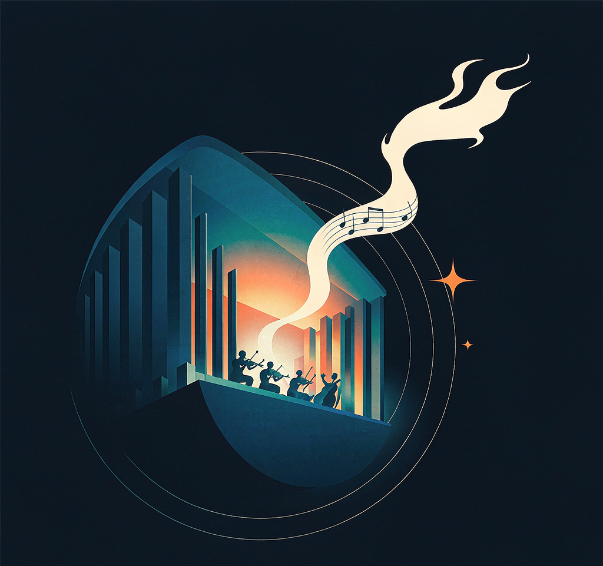
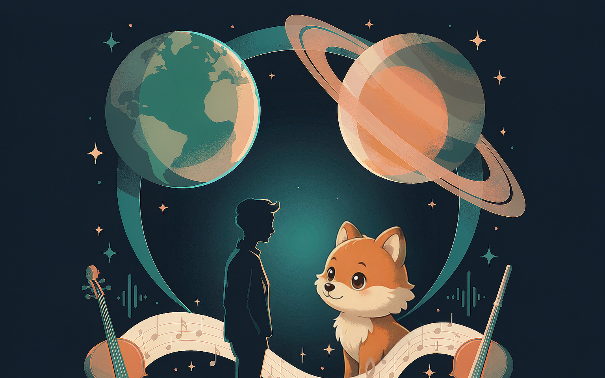
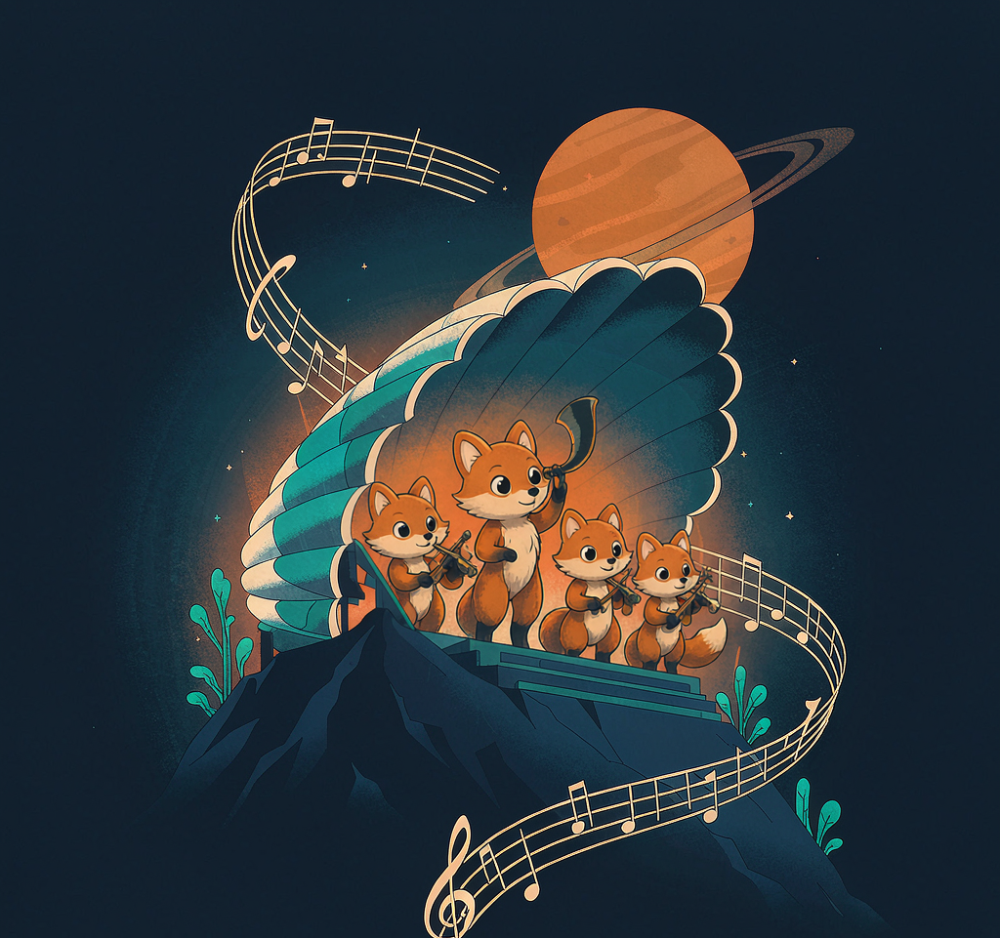

地球 · 传统声部
来自柏林、维也纳与上海的三十七位乐手。他们把四个世纪的弓法与呼吸带进无重力排练厅，负责整支乐团的地基。
2027 乐季 · 全球招募已开启
地球与狐星联合乐团
EARTH × VULPES JOINT ORCHESTRA
我们横跨两个文明招募乐手。弦乐在低重力下更轻，管乐在富氧大气里更亮——
但和声的语法，从来不分星系。

当一束人类的长笛声穿过真空，
撞上狐星人的共鸣腔——
我们听见的从来不是回声，而是和声。
王汐雨 双星乐团艺术总监
2029 年，地球的第一次深空广播被狐星接收。三年后，两支乐团在拉格朗日点完成第一次合奏——那场演出持续了十一分钟，全部是即兴。

来自柏林、维也纳与上海的三十七位乐手。他们把四个世纪的弓法与呼吸带进无重力排练厅，负责整支乐团的地基。

狐星乐手用胸腔共鸣腔叠加人耳听不见的泛音层。他们不演奏旋律，而是让旋律在空气里多停留两秒。
投递截止 2027.03.31 · 滚动面试
录制两段自选曲目，总长不超过 12 分钟，附上简历与声部意向即可。
48 小时内收到反馈。通过者进入线上即兴环节，与随机分配的声部首席连麦合奏。
在最近的深空中继站完成 20 分钟实时合奏，考察重力适应与临场反应。
与艺术总监面谈。比起技术，我们更想知道你为什么想登上这艘船。
每年 47 场，横跨 6 个恒星系统。乐团承担全部航行、住宿与重力适应训练费用——包括你第一次上船时那套定制耳压平衡器。
无重力排练厅、可变声学穹顶，以及一间 24 小时不关灯的谱库。
每季与狐星歌者、气态行星打击乐团合作。你的同事来自九个物种。
| 日期 | 城市 | 场馆 | 曲目 | 状态 |
|---|---|---|---|---|
| 03.14 | 上海 · 地球 | 交响乐厅 · 主厅 | 德彪西《海》/ 狐星泛音组曲 | 已开票 |
| 04.02 | 拉格朗日 L2 中继站 | 环形剧场 | 双星合奏计划 No.7 | 已售罄 |
| 05.19 | 狐星 · 赤湾 | 贝壳露天剧场 | 无伴奏泛音之夜 | 已开票 |
| 06.30 | 广州 · 地球 | 星海音乐厅 | 2027 乐季闭幕音乐会 | 候补中 |
没找到答案？报名表的最后一栏可以补充你想问的问题，我们会在回复里一并说明。
可以。我们每年有三分之一的新成员是第一次离开地球。入团后有为期四个月的适应期，包括重力训练、真空读谱，以及一次由狐星声部长带领的听觉校准。
两段自选，风格不限。我们更在意你如何处理一段休止符。
会。弓压需要重新学习，管乐的呼吸阻力下降约 40%。前两周通常会很难听，这是正常的。
三年起签，含全额医疗保险、返地球年假，以及每年一次的乐器检修。
可以。每位乐手有两个随行名额，家属舱位与乐团同批次安排。